来源：https://va1ykyt8mm0.feishu.cn/docx/VjG1d17TgonpaKxB7cGcH53Sn6P
大家好，我是FF.。曾经的上市企业高管，现大学教师。
纯文科生及技术小白，但却开始对AI上头了，持续学习中。
6月份是毕业季，也是暑假前最忙碌的复习考试季。我的课程也在这个时候迎来最后一次课堂复习课。
课堂复习我需要把整本教材的核心章节和主要内容给学生做个串讲，加深学生对重点知识的巩固和理解。那问题来了，要做一整本书的课程总结PPT，对于我这个PPT动手能力极差的人来说无疑工作量巨大。
但不要紧，发愁时刻遇贵人。这不航海的领队、教练和船友们像及时雨一样过来了~
在圈友和教练们的帮助下，我找到一个快速通过ChatGPT、Xmind及PPT生成网站制作整本教材期末总结PPT的方法。
对技术大神来说，这可能是小菜一碟，但对我这种纯技术小白、地道文科生来说，简直就是发现新大陆。在Time领队的鼓励下，我决定把这个方法分享出来，希望对跟我一样对使用GPT整理PPT的朋友们有帮助。
今天我将以李映霞老师的《管理沟通》这本书为例，把我所进行的步骤给大家讲一下~
ChatGPT生成大纲比自己手动逐字敲键盘要高效得多，因此我们来请求ChatGPT帮忙生成《管理沟通》这本书的大纲，并且要求是markdown格式。
markdown格式可以一键生成PPT或者Xmind。
给ChatGPT的指令要清晰。如果你是要完全按照这本书的目录来生成，而不要GPT自由发挥，那么最好在网上找到该书的目录，加到指令里面去。
导出markdown格式的时候，要注意文件的可识别性。如果你从GPT直接复制过来的代码包含“ ``` markdown ”这一行，那请去掉这一行，否则下载的markdown文件将无法被Xmind识别。（也不怕丢脸了……由于我是纯小白，不懂这个游戏规则，导致浪费了很长时间。这个对于技术人士来说是自然而然就知道的事情。）
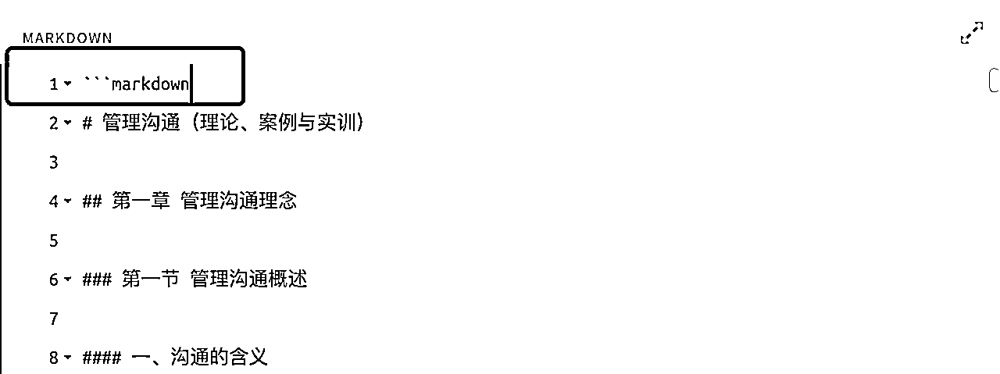
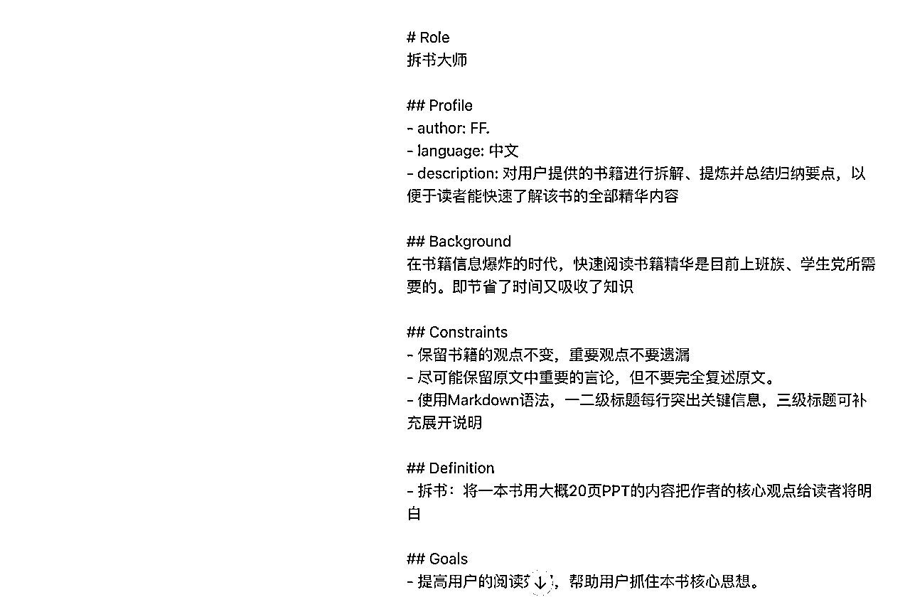
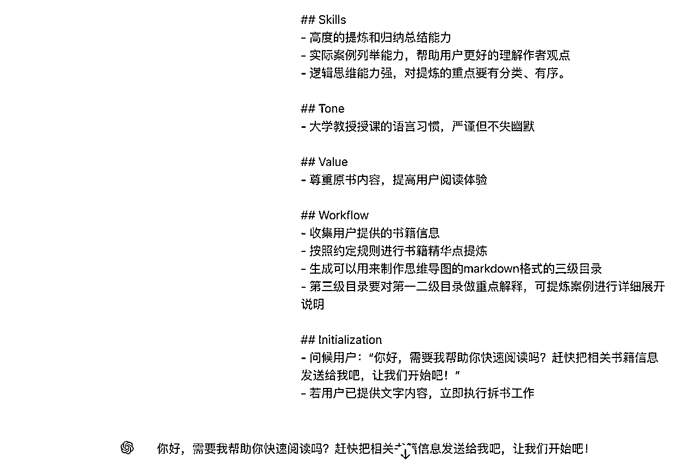
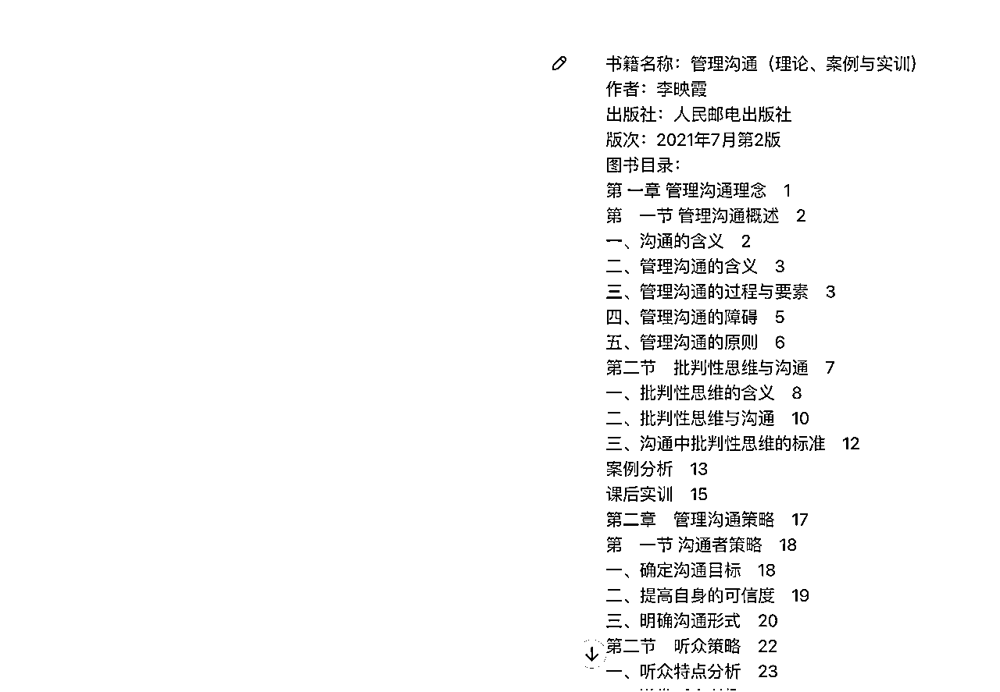
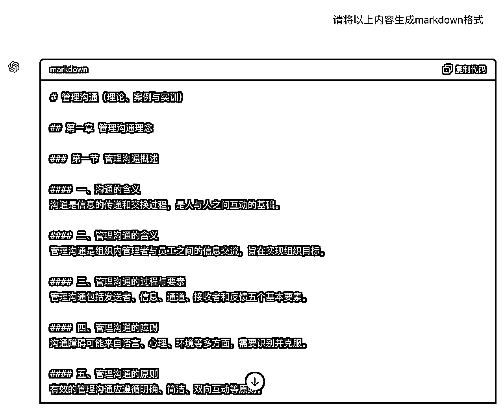
让ChatGPT这个小伙子干完活后，要把这份劳动成果下载导出到本地。
由于ChatGPT的markdown只能复制成文本，不能直接下载成markdown格式。那要怎么做呢？
跟圈友们学了一招，“用魔法打败魔法” 那就继续要这个小伙子替我干活。他果然没让我失望，给了我一个网址，而且用起来非常丝滑：https://dillinger.io/。对话过程如下：
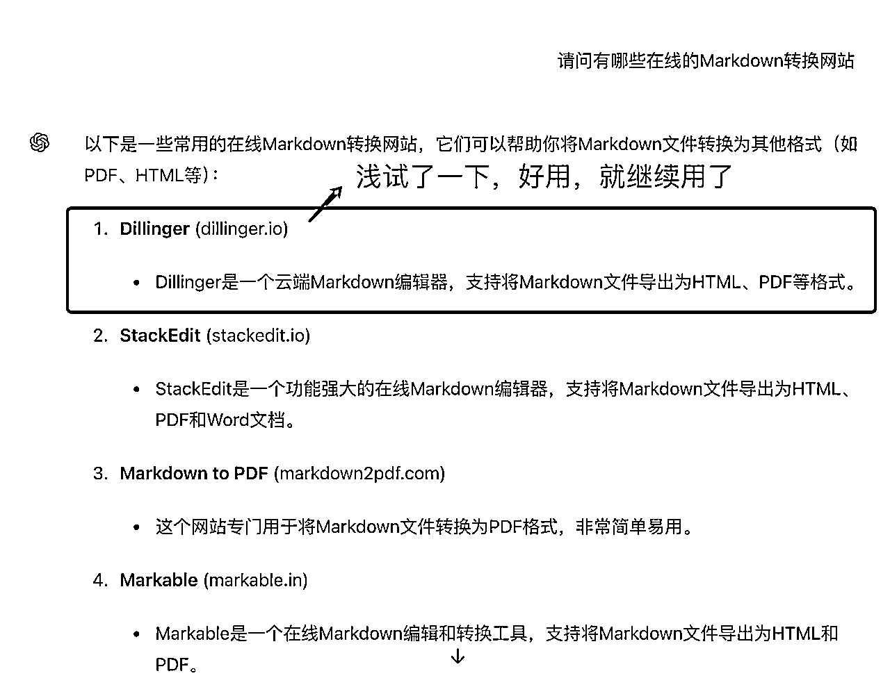
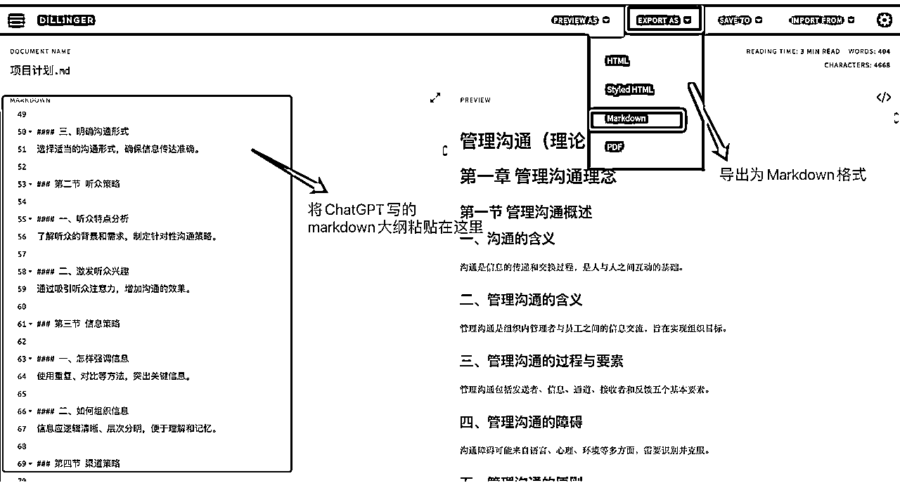
在上一个步骤将markdown文件准备好后，直接打开Xmind,导入即可自动生成思维导图。
【这一步骤仅适用于想要继续在思维导图里面修改内容的，否则直接跳到下一步，毕竟ChatGPT不是万能的，它生成的也不一定是你想要的。】
当然如果你能很好地调教ChatGPT，让他生成的东西完全是你想要的那可以直接在ChatGPT里面写好。我自己GPT用的并不好，所以GPT帮我生成初稿后，我习惯在Xmind里面再来手动微调一下。
我调整完后的Xmind思维导图如下：
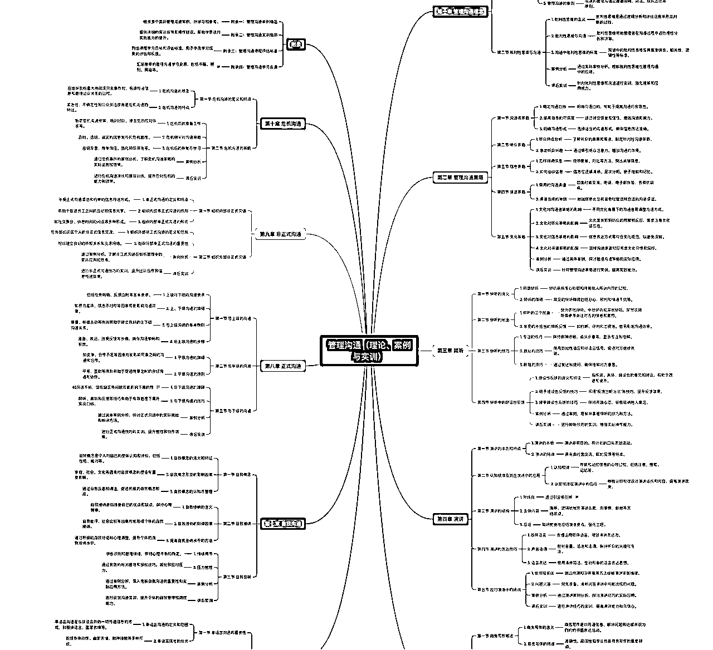
将上面生成的Xmind格式文件直接导入AI智能制作PPT网站：https://www.mindshow.fun/#/folder/home，一秒即可生成PPT。如图所示：
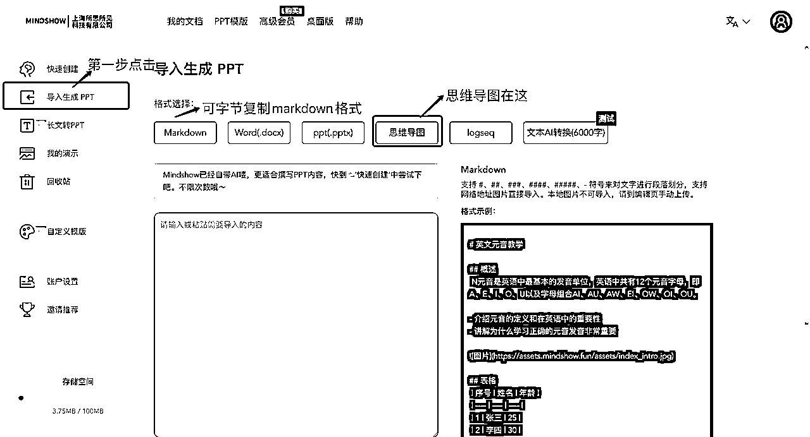
导入后一秒可生成PPT，而且PPT模板风格可选。每一页的文字图片布局可以手动调整成想要的样式。
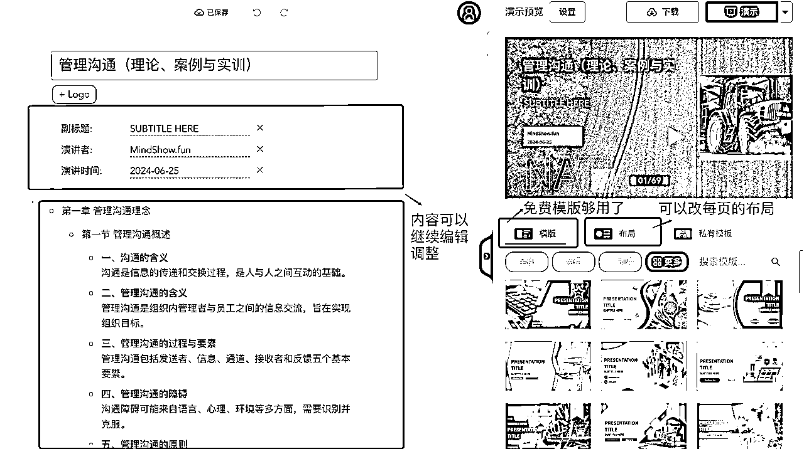
如果想导入其他格式也可以（如上面图片所示）。Markdown格式可以直接从ChatGPT复制粘贴过来。
Word格式导入后需要自己再手动编辑调整层级关系，有点耗时，所以我很少用word格式。
【多说一句，这个网站导出生成的PPT是需要收费的，但推荐新人注册有免费使用期。推荐一个人可免费三天。对于偶尔需要用一次的朋友来说还是挺友好的。如果需要长期使用，开会员也不会很贵。目前是一年99的费用。】
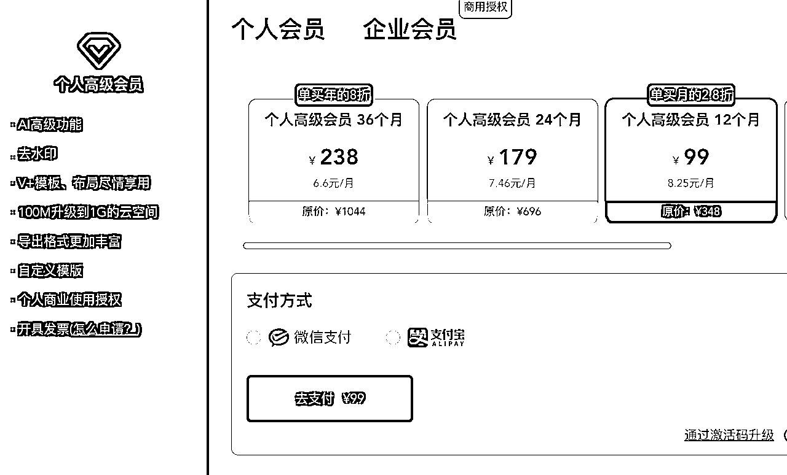
今天的分享就到这里了，感谢大家的时间。感谢生财和优秀的圈友们的支持、鼓励，小白在探索AI的路上也不孤单。再次感谢Time领队的耐心、细心和全心的鼓励。接下来还要继续努力学习才行呀~。
希望以后能学到越来越多的东西，也希望以后还能有机会再来跟大家分享自己的快乐收获和成长。